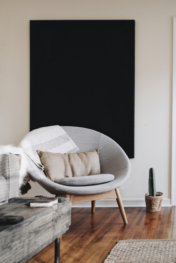
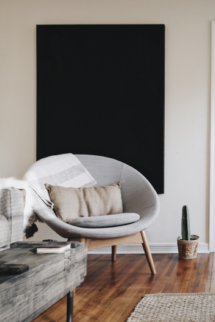

Art Director
Scenography / Styling / Creative Photography / Design
“The more I deal with the work
as something that is my own,
as something that is personal,
the more successful it is.”
Jess Wonder
From/ Be more flower
Skills/ Design Strategy / Marketing
Kameron Clein
From/ Be more flower
Skills/ Design Strategy / Marketing

LOUISSE RED
From/ Be more flower
Skills/ Design Strategy / Marketing
Website
www.whitepapers.com
Creativity
www.whitepapers.com
Creativity
www.whitepapers.com
I just really
want to do
good work
and work with
some great
people, people
who challenge
me.
 

Interiors
Outdoors
Portraits
Styling
Events
Architecture
Design
Celebrations
Artistic
Fashion
Nature
Creativity